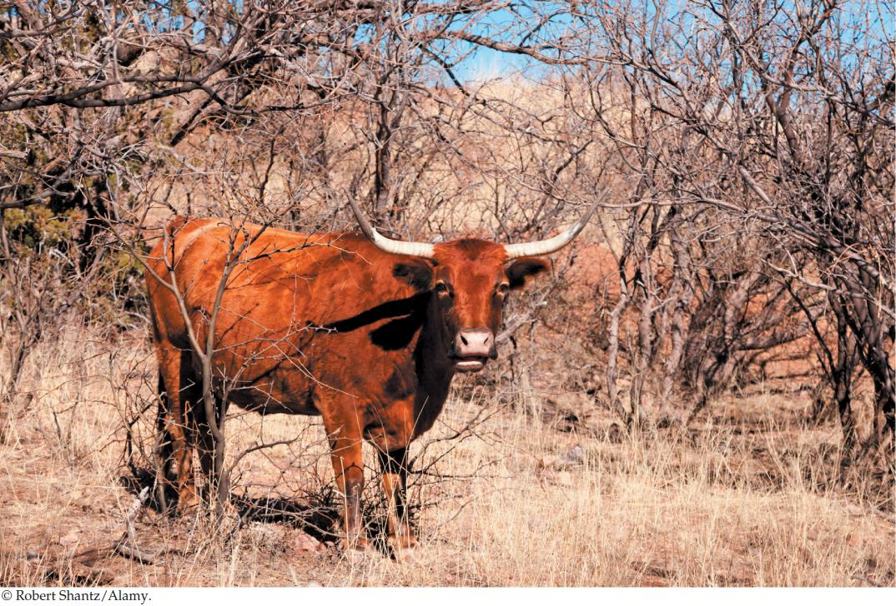

| 41 | The Distribution of Earth’s Ecological Systems |
|

A cow grazes in a mesquite-dominated former grassland in southeastern Arizona. Reducing grazing has failed to restore this region’s grassland ecosystem.
|
The U.S.–Mexico Borderlands of southeastern Arizona have a colorful “Wild West” history peopled by Native Americans, Spanish explorers, cowboys, buffalo soldiers, outlaws and sheriffs, miners and ranchers, and railroad tycoons. This history has faded with time—except for one lasting legacy that dates from the cattle boom of the 1880s.
The first herds of cattle were brought to the Borderlands in 1687, when Spanish missions and settlements were established, but livestock numbers remained below 40,000 head until the 1880s. At that time, the end of the Apache Wars, the completion of transcontinental railroads (which opened huge markets for beef), and an influx of investment capital combined to bring 1.5 million animals to fatten on the free grass of Arizona’s “open range.” The sea of grass that had once grown ’as high as the belly of a horse” was soon grazed to the ground.
The boom did not last long. A drought in 1892 and 1893 killed 75 percent of the cattle, leaving so many carcasses that one could walk across the San Simon Valley, it is said, without touching the ground. Prickly shrubs such as mesquite (Prosopis species) gained a toehold in the denuded landscape when torrential rains returned in the late 1890s, washing away soil and cutting deep gullies in the landscape. The once rich grasslands had been turned into shrublands that could support few cattle.
Soon thereafter, state and federal governments closed the “open range,” substituting a lease system that would allow them to better manage public lands. They tried to restore the grasses using a method that had worked for thousands of years in the grassy meadows of Europe: adjust the number of cattle up or down depending on meadow conditions. This method is based on the assumption that grazing depletes grasses that cattle prefer and thereby favors the growth of less desirable plants. If that is the case, then reducing the number of cattle should allow the desirable species to recover. Alas, “resting the range” has not worked in the arid Borderlands: shrubs have continued to spread, and grasses have not increased measurably.
Can basic ecological principles suggest why removing cattle has not restored grasses to the Borderlands?